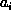
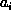

Data Structures and Algorithms
with Object-Oriented Design Patterns in Java
Data Structures and Algorithms
with Object-Oriented Design Patterns in Java
In the previous section,
we found the function,  ,
which gives the running time of Program
,
which gives the running time of Program  as a function both of number of inputs, n,
and of the actual input values.
Suppose instead we are interested in a function
which gives the running time on average
for n inputs, regardless of the values of those inputs.
In other words, if we run Program ,
a large number of times on a selection of random inputs of length n,
what will the average running time be?
as a function both of number of inputs, n,
and of the actual input values.
Suppose instead we are interested in a function
which gives the running time on average
for n inputs, regardless of the values of those inputs.
In other words, if we run Program ,
a large number of times on a selection of random inputs of length n,
what will the average running time be?
We can write the sum of the running times given in Table
in the following form
where  is the probability that line 8 of the program is executed.
The probability
is the probability that line 8 of the program is executed.
The probability  is given by
is given by
That is,  is the probability that the
is the probability that the  array entry, ,
is larger than the maximum of all the preceding array entries,
.
array entry, ,
is larger than the maximum of all the preceding array entries,
.
In order to determine  ,
we need to know (or to assume)
something about the distribution of input values.
For example, if we know a priori that the array passed to the method
findMaximum is ordered from smallest to largest,
then we know that
,
we need to know (or to assume)
something about the distribution of input values.
For example, if we know a priori that the array passed to the method
findMaximum is ordered from smallest to largest,
then we know that  .
Conversely, if we know that the array is ordered from largest to smallest,
then we know that
.
Conversely, if we know that the array is ordered from largest to smallest,
then we know that  .
.
In the general case, we have no a priori knowledge of the
distribution of the values in the input array.
In this case, consider the  iteration of the loop.
In this iteration is compared with the maximum of the i values,
preceding it in the array.
Line 6 of Program is only executed if is the largest
of the i+1 values .
All things being equal,
we can say that this will happen with probability 1/(i+1).
Thus
iteration of the loop.
In this iteration is compared with the maximum of the i values,
preceding it in the array.
Line 6 of Program is only executed if is the largest
of the i+1 values .
All things being equal,
we can say that this will happen with probability 1/(i+1).
Thus
Substituting this expression for  in Equation
and simplifying the result we get
in Equation
and simplifying the result we get
where ,
is the  harmonic number .
harmonic number .
 Copyright © 1998 by Bruno R. Preiss, P.Eng. All rights reserved.
Copyright © 1998 by Bruno R. Preiss, P.Eng. All rights reserved.